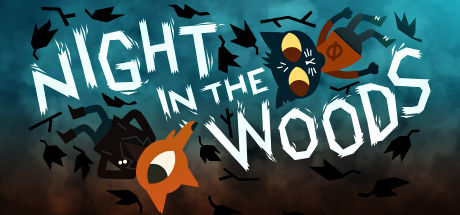

Night in the Woods

Night in the woods is a story driven adventure game that focuses on exploring, growing up, and learning how to deal with change. You play as Mae, a college dropout who returns to her hometown, Possum Spring, hoping everything will be the same as when she left. Instead she's faced with the realization that her friends have changed, the town has gotten quieter, and there's a strange mystery hiding underneath all of it. As she reconnects with her friends she starts noticing weird things like missing people, strange figures in the woods, and dreams that feel too real. While the game has a lot of humor and laid back moments it also deals with deeper topics like depression, anxiety, identity, and feeling "stuck"
when everyone else is moving forward in life.
Gameplay
This game is about fighting monsters, leveling up, exploring, getting to know the world and its characters. For most of the game you attend band class and hit notes, work shifts with Bae at the hardware store, break into abandoned buildings with Gregg, explore the world, and run through surreal eerie dreams. Even though it's simple, the choices you make change how characters feel about you and what conversations you have with them. The game cares about telling a meaningful story rather than giving you action or puzzles.
Rating
I give Night in the Woods a four star rating because it really connects with players on an emotional level, it delivers a really emotional and relatable story especially for teens and young adults. Even though it's been a few years since it got released it's still talked about a lot because of how relatable and emotional it is. You play as Mae, a college dropout who is struggling with confusing emotions, friendships changing, and not knowing what her future is supposed to look like. One of the biggest reasons the game became popular is because of its themes as its not just for entertainment but it talks about mental health, growing up, financial stress, drifting friendships, and feeling lost planning life. The gameplay can feel slow sometimes since its a lot of walking around while talking, which might not feel as exciting for everyone. But even with that the writing, characters, and message makes it powerful and memorable. Overall, Night in the Woods deserves a four star rating because it tells a meaningful story that many students can personally relate to and it continues to be recognized for its emotional depth and creativity years after its release.
Other games
Oxenfree
Life is Strange
Spiritfarer
Firewatch
Before your eyes
Beacon Pines
Gris
Kentucky Route Zero
Filed under Coming of Age